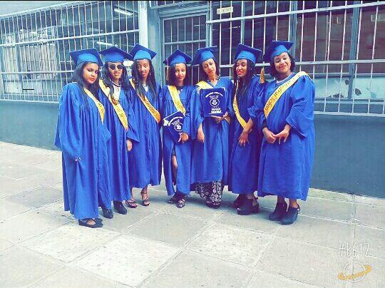

I am originally from Addis Ababa, Ethiopia, and am a proud Habesha from the land of origin.
I was born in Aug, 1999G.C I am the last daughter for the family and I started school in fancy
youth acadamy.
After kindergarten, I moved to Alpha keranyo school, this place is where my changes began as i
joined new environment
I could realize what my interests were and started chasing them.
As I grew up I applied to some summer camps to spend my time effectively. And i can confidently say it has a great contribution to my current social and acadamic life . I can easily communicate with people and It helped me find fruitful friendship that am greatful for.
As I grew up I applied to some summer camps to spend my time effectively. And i can confidently say it has a great contribution to my current social and acadamic life . I can easily communicate with people and It helped me find fruitful friendship that am greatful for.

I am now a software engineering second year student at Addis Ababa university Prior to joining
AAiT, I graduated high school from Lideta Catholic Cathedra School/LCCS
also I was an Assistant volleyball player there. I have been certified for the role I made in
female volley ball team of the school .
I have a great dream of being a traveller all over the world beside contributing on the
technology field
so far i have not been able to tour many places often but I do watch posts and online videos
related to it

I am also interested in raising pets and am concerned about the wild life threat that we are
currently observing
As a human being I think we all are responsible for such kinds of threats.
I am hopeful in few years we will see changes and wild life threat stops,
Thankyou for reading this
I am hopeful in few years we will see changes and wild life threat stops,
Thankyou for reading this